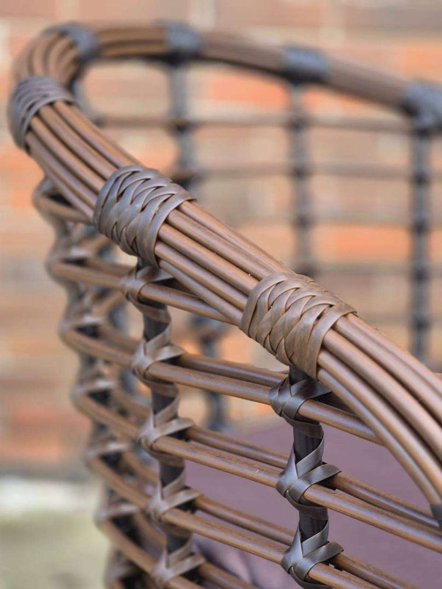

Материалы и уход
В каталоге есть мебель из искусственного ротанга. Для каркасов используются металл и алюминий.
Уход за изделиями
- Протирайте плетение мягкой влажной тканью.
- Пыль из труднодоступных мест можно убрать мягкой щёткой.
- Не используйте жёсткие металлические губки.
- После мытья дайте изделию высохнуть.
Перед покупкой
- Уточните размеры и материал каркаса.
- Узнайте, можно ли использовать изделие на улице.
- Проверьте наличие нужного цвета.

Плетение ротанга крупным планом.